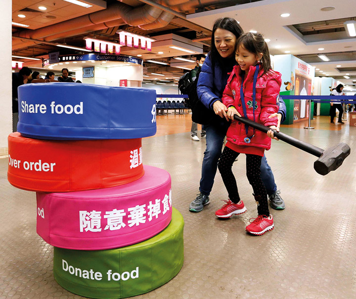
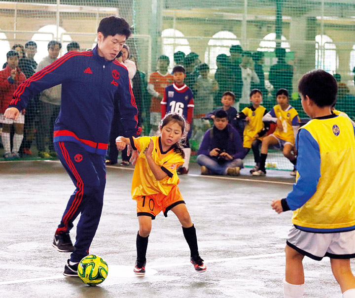
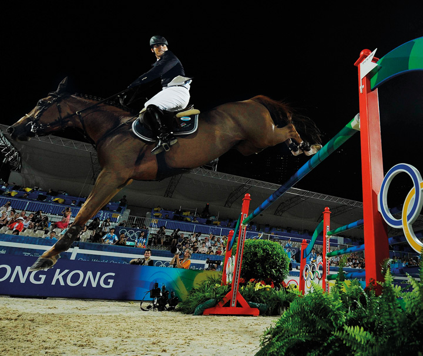

馬會知多少
除了香港賽馬會慈善信託基金的工作外，馬會透過不同活動走進社區，例如在沙田馬場及彭福公園舉辦的年度大型社區盛事「同心同步同樂日」，旨在教育及啟發香港市民，宣揚「我做得到」的正面精神。馬會將其商業知識及運動項目管理經驗，發揮在建設更美好香港之上，尤其著力於推動馬術運動和社區足球項目。
為準備於香港舉行的北京2008年奧運及殘奧馬術比賽，馬會斥資12億港元興建比賽場地，並管理有關工程，以及於比賽當中提供一切支援運送服務，因而獲授「重要貢獻機構」的名銜。
馬會其後支持舉辦廣州2010年亞運會馬術項目，興建中的從化馬匹訓練中心，正是廣州亞運會馬術項目的遺產。承接有關發展，馬會亦正積極培育香港精英騎手，支持他們於歐洲受訓，多名馬會贊助的騎手更已於國際賽事取得佳績。
馬會三間公眾騎術學校，每年吸引超過60,000人次參加其課程及活動，此外，馬會又向五星級香港馬術大師賽等比賽提供贊助及技術支援，喚起市民對馬術運動興趣。香港馬術大師賽的焦點項目是獨特的香港賽馬會騎師馬術接力賽，由香港頂級騎師夥拍精英馬術騎手，在馬術賽一較高下，詳情請見「馬會馬術發展」。
馬會亦善用其商業知識，推廣足球運動，務求帶來個人及社區的正面改變。馬會與香港足球總會及非政府組織夥伴合作，倡導「賽馬會青少年足球發展計劃」，為香港年輕人提供專業足球、領導才能及人生技巧培訓，協助他們提升體能、心智及社交發展。不少計劃參加者深受啟發，已開始擔任社區足球教練，與其他年輕人分享所學，回饋社會。
馬會透過「香港賽馬會青少年體育記者培訓計劃 」，提升青少年的語文及溝通能力。馬會亦與地區夥伴緊密合作，透過地區活動回應社區需要，由員工組成的馬會義工隊經常參與其中。


